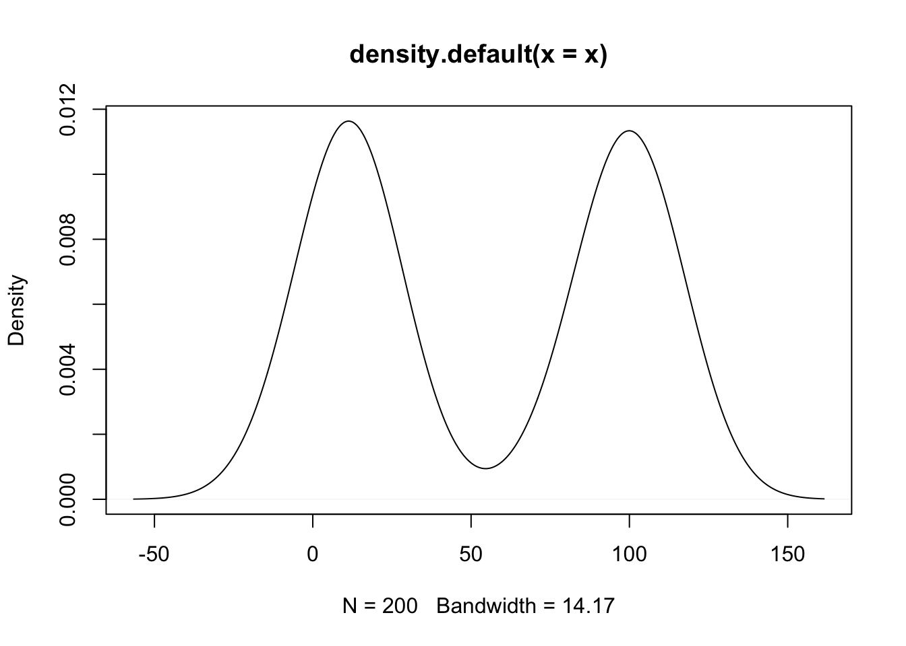
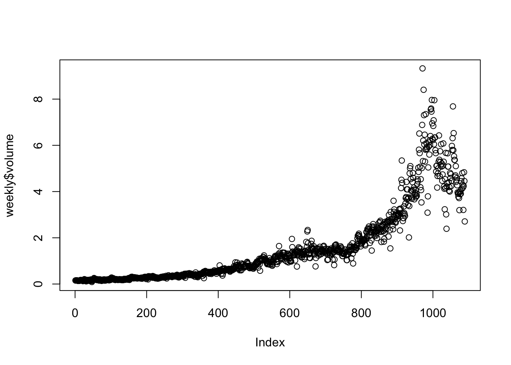
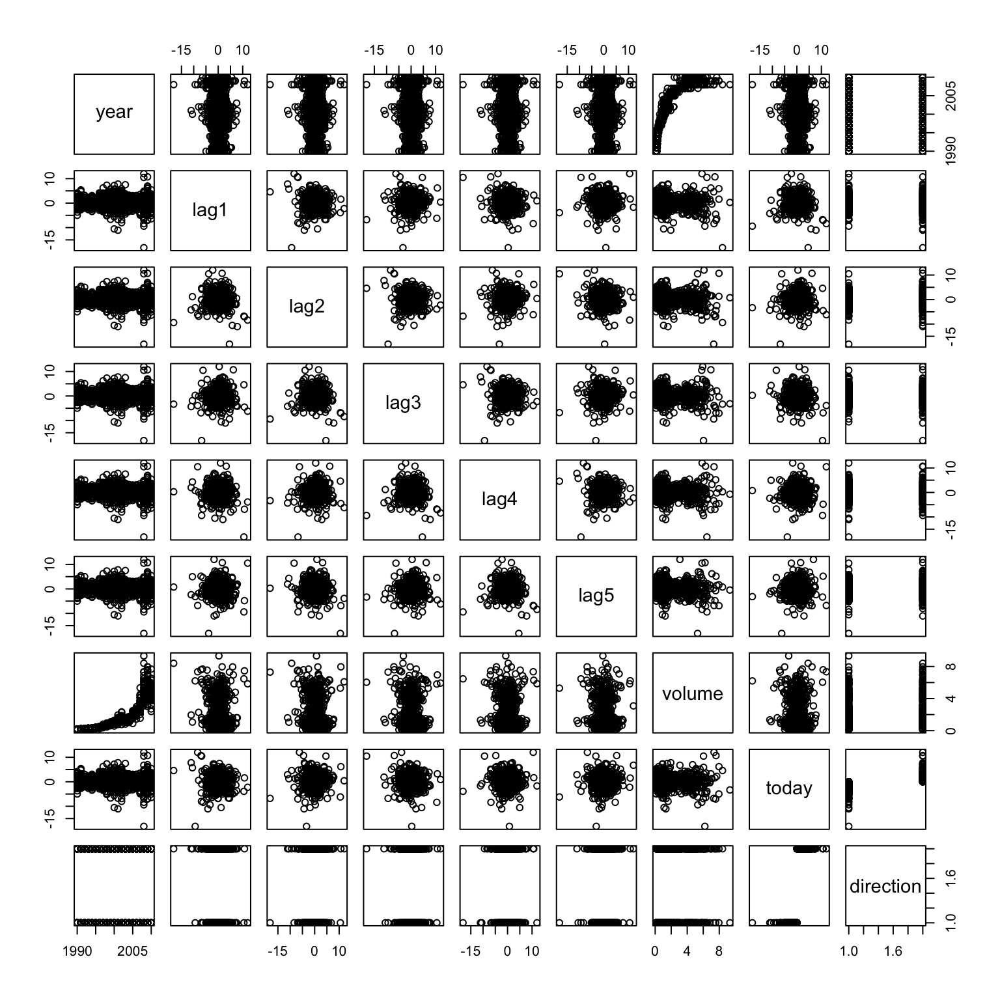
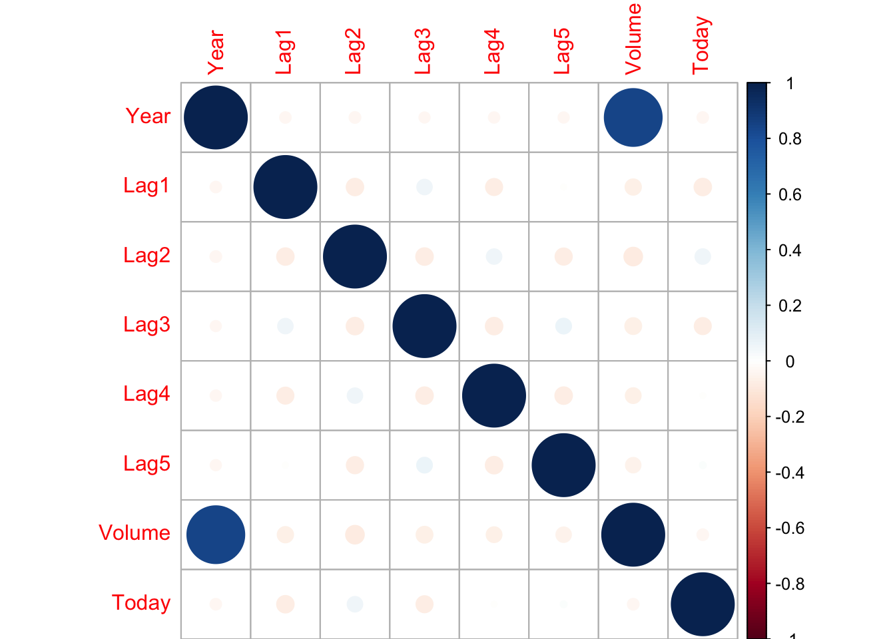
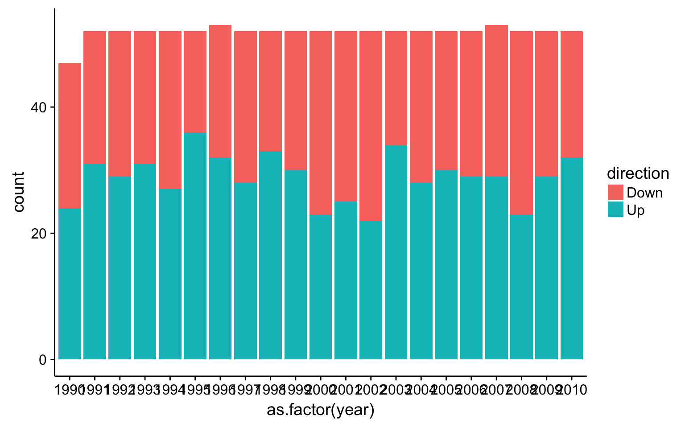
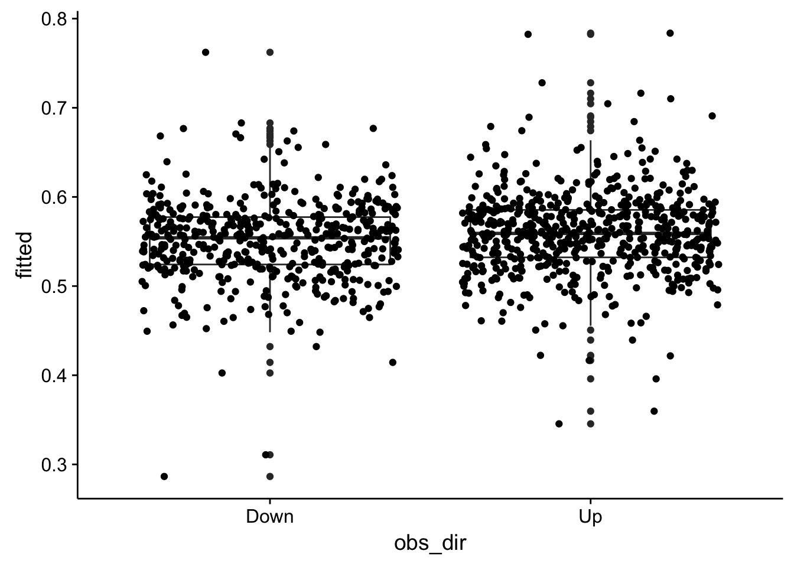
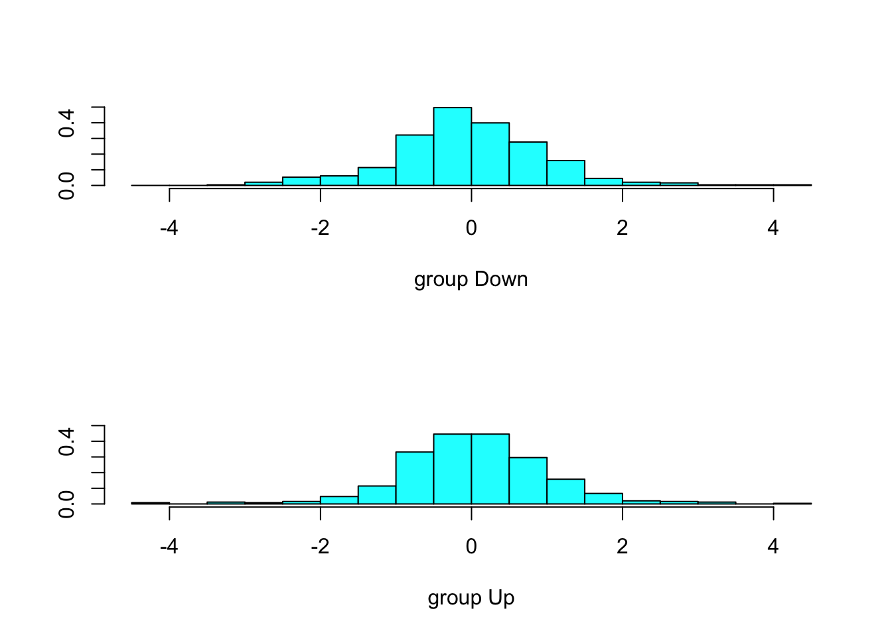

3 Chapter 4
3.1 notes
following the example https://tgmstat.wordpress.com/2014/01/15/computing-and-visualizing-lda-in-r/
require(MASS)
x1 = rnorm(100, mean = 10, sd = 10)
x2 = rnorm(100, mean = 100, sd = 10)
x =c(x1, x2)
y = c(rep(0, 100), rep(1, 100))
plot(density(x))
# run LDA
r <- lda(formula = y ~ x, prior = c(1,1)/2)
r## Call:
## lda(y ~ x, prior = c(1, 1)/2)
##
## Prior probabilities of groups:
## 0 1
## 0.5 0.5
##
## Group means:
## x
## 0 11.00064
## 1 99.36194
##
## Coefficients of linear discriminants:
## LD1
## x 0.098743653.2 trying to predict
predict(r, newdata = 10)## $class
## [1] 0 0 0 0 0 0 0 0 0 0 0 0 0 0 0 0 0 0 0 0 0 0 0 0 0 0 0 0 0 0 0 0 0 0 0
## [36] 0 0 0 0 0 0 0 0 0 0 0 0 0 0 0 0 0 0 0 0 0 0 0 0 0 0 0 0 0 0 0 0 0 0 0
## [71] 0 0 0 0 0 0 0 0 0 0 0 0 0 0 0 0 0 0 0 0 0 0 0 0 0 0 0 0 0 0 1 1 1 1 1
## [106] 1 1 1 1 1 1 1 1 1 1 1 1 1 1 1 1 1 1 1 1 1 1 1 1 1 1 1 1 1 1 1 1 1 1 1
## [141] 1 1 1 1 1 1 1 1 1 1 1 1 1 1 1 1 1 1 1 1 1 1 1 1 1 1 1 1 1 1 1 1 1 1 1
## [176] 1 1 1 1 1 1 1 1 1 1 1 1 1 1 1 1 1 1 1 1 1 1 1 1 1
## Levels: 0 1
##
## $posterior
## 0 1
## 1 1.000000e+00 4.021380e-17
## 2 1.000000e+00 4.151098e-16
## 3 1.000000e+00 6.824229e-18
## 4 1.000000e+00 1.472318e-18
## 5 1.000000e+00 4.979619e-15
## 6 1.000000e+00 2.418133e-13
## 7 1.000000e+00 1.267942e-26
## 8 1.000000e+00 1.728533e-15
## 9 1.000000e+00 3.138856e-16
## 10 1.000000e+00 3.187642e-19
## 11 1.000000e+00 4.498308e-14
## 12 1.000000e+00 4.347941e-19
## 13 1.000000e+00 1.073516e-18
## 14 1.000000e+00 2.008251e-14
## 15 1.000000e+00 3.380232e-11
## 16 1.000000e+00 1.273894e-16
## 17 1.000000e+00 3.273465e-19
## 18 1.000000e+00 4.419934e-22
## 19 1.000000e+00 7.179005e-19
## 20 1.000000e+00 3.785757e-21
## 21 1.000000e+00 1.336102e-18
## 22 1.000000e+00 3.718031e-16
## 23 1.000000e+00 8.078213e-21
## 24 9.999999e-01 1.016182e-07
## 25 1.000000e+00 4.768940e-17
## 26 1.000000e+00 2.106370e-13
## 27 1.000000e+00 3.384895e-26
## 28 1.000000e+00 7.366413e-15
## 29 1.000000e+00 1.478193e-22
## 30 1.000000e+00 3.437756e-14
## 31 1.000000e+00 3.840147e-16
## 32 1.000000e+00 3.714013e-19
## 33 1.000000e+00 1.121011e-12
## 34 1.000000e+00 2.957366e-20
## 35 1.000000e+00 8.360163e-20
## 36 1.000000e+00 2.233585e-21
## 37 1.000000e+00 3.931683e-20
## 38 1.000000e+00 4.278025e-14
## 39 1.000000e+00 5.217307e-16
## 40 1.000000e+00 7.172108e-14
## 41 1.000000e+00 4.315046e-19
## 42 1.000000e+00 3.183683e-16
## 43 1.000000e+00 1.019205e-16
## 44 1.000000e+00 5.729311e-23
## 45 1.000000e+00 5.610012e-11
## 46 1.000000e+00 3.960377e-17
## 47 1.000000e+00 9.105272e-15
## 48 1.000000e+00 4.661002e-14
## 49 1.000000e+00 8.044122e-18
## 50 1.000000e+00 8.921131e-19
## 51 1.000000e+00 2.744767e-14
## 52 1.000000e+00 1.499825e-21
## 53 1.000000e+00 2.956386e-10
## 54 1.000000e+00 4.563058e-19
## 55 1.000000e+00 1.922803e-11
## 56 1.000000e+00 5.660707e-12
## 57 1.000000e+00 2.541607e-17
## 58 1.000000e+00 1.648272e-15
## 59 1.000000e+00 1.824577e-21
## 60 1.000000e+00 2.010298e-16
## 61 1.000000e+00 9.989091e-14
## 62 1.000000e+00 2.920095e-17
## 63 1.000000e+00 2.485711e-19
## 64 1.000000e+00 4.374849e-20
## 65 1.000000e+00 9.125757e-18
## 66 1.000000e+00 1.244864e-13
## 67 1.000000e+00 1.922237e-19
## 68 1.000000e+00 4.384291e-18
## 69 1.000000e+00 1.788303e-22
## 70 1.000000e+00 8.794906e-16
## 71 1.000000e+00 9.736590e-13
## 72 1.000000e+00 4.967105e-12
## 73 1.000000e+00 1.390025e-14
## 74 1.000000e+00 1.254748e-24
## 75 1.000000e+00 7.911723e-16
## 76 1.000000e+00 6.329725e-16
## 77 1.000000e+00 5.920704e-19
## 78 1.000000e+00 5.402477e-17
## 79 1.000000e+00 7.273544e-21
## 80 1.000000e+00 4.326453e-15
## 81 1.000000e+00 7.426366e-19
## 82 1.000000e+00 1.673786e-23
## 83 1.000000e+00 5.245673e-19
## 84 1.000000e+00 1.584659e-12
## 85 1.000000e+00 6.980876e-19
## 86 1.000000e+00 6.860933e-15
## 87 1.000000e+00 4.329963e-14
## 88 1.000000e+00 1.291627e-17
## 89 1.000000e+00 5.975947e-19
## 90 1.000000e+00 1.296390e-19
## 91 1.000000e+00 7.277347e-15
## 92 1.000000e+00 1.304902e-21
## 93 1.000000e+00 1.037330e-16
## 94 1.000000e+00 1.026760e-18
## 95 1.000000e+00 4.170835e-26
## 96 1.000000e+00 6.656304e-23
## 97 1.000000e+00 3.327479e-14
## 98 1.000000e+00 2.393189e-18
## 99 1.000000e+00 1.259780e-14
## 100 1.000000e+00 1.435404e-10
## 101 5.194870e-23 1.000000e+00
## 102 4.968575e-20 1.000000e+00
## 103 6.436509e-19 1.000000e+00
## 104 8.948086e-17 1.000000e+00
## 105 2.120322e-23 1.000000e+00
## 106 9.987007e-20 1.000000e+00
## 107 4.182867e-13 1.000000e+00
## 108 6.496887e-17 1.000000e+00
## 109 2.571932e-10 1.000000e+00
## 110 9.139790e-17 1.000000e+00
## 111 8.510654e-08 9.999999e-01
## 112 2.059625e-22 1.000000e+00
## 113 4.058184e-15 1.000000e+00
## 114 6.905254e-16 1.000000e+00
## 115 7.309296e-17 1.000000e+00
## 116 8.702185e-20 1.000000e+00
## 117 4.922911e-20 1.000000e+00
## 118 1.274259e-19 1.000000e+00
## 119 2.358334e-15 1.000000e+00
## 120 2.144477e-12 1.000000e+00
## 121 4.839621e-16 1.000000e+00
## 122 1.550536e-18 1.000000e+00
## 123 2.041909e-14 1.000000e+00
## 124 3.075550e-17 1.000000e+00
## 125 3.975059e-13 1.000000e+00
## 126 1.825714e-17 1.000000e+00
## 127 5.600277e-18 1.000000e+00
## 128 5.972564e-17 1.000000e+00
## 129 6.976586e-17 1.000000e+00
## 130 4.282760e-24 1.000000e+00
## 131 2.382322e-20 1.000000e+00
## 132 1.179618e-21 1.000000e+00
## 133 4.838087e-14 1.000000e+00
## 134 4.125069e-18 1.000000e+00
## 135 8.116617e-22 1.000000e+00
## 136 2.765842e-17 1.000000e+00
## 137 1.576507e-09 1.000000e+00
## 138 8.710561e-19 1.000000e+00
## 139 2.280588e-10 1.000000e+00
## 140 1.842763e-14 1.000000e+00
## 141 1.889572e-22 1.000000e+00
## 142 8.449613e-20 1.000000e+00
## 143 1.398571e-21 1.000000e+00
## 144 1.210963e-18 1.000000e+00
## 145 4.390564e-17 1.000000e+00
## 146 4.884400e-14 1.000000e+00
## 147 1.862922e-23 1.000000e+00
## 148 1.153264e-17 1.000000e+00
## 149 8.055891e-15 1.000000e+00
## 150 9.839405e-21 1.000000e+00
## 151 1.622355e-21 1.000000e+00
## 152 1.372270e-24 1.000000e+00
## 153 3.065891e-15 1.000000e+00
## 154 4.929914e-16 1.000000e+00
## 155 6.133471e-16 1.000000e+00
## 156 4.324413e-16 1.000000e+00
## 157 4.000858e-16 1.000000e+00
## 158 2.171046e-16 1.000000e+00
## 159 6.847551e-23 1.000000e+00
## 160 6.923047e-15 1.000000e+00
## 161 4.816546e-16 1.000000e+00
## 162 6.148524e-20 1.000000e+00
## 163 1.051532e-21 1.000000e+00
## 164 1.316202e-14 1.000000e+00
## 165 1.353416e-15 1.000000e+00
## 166 1.866942e-19 1.000000e+00
## 167 2.643922e-21 1.000000e+00
## 168 1.479506e-16 1.000000e+00
## 169 3.809768e-12 1.000000e+00
## 170 6.845200e-24 1.000000e+00
## 171 7.257627e-23 1.000000e+00
## 172 7.732386e-15 1.000000e+00
## 173 2.977174e-17 1.000000e+00
## 174 6.511551e-11 1.000000e+00
## 175 1.254964e-19 1.000000e+00
## 176 1.575734e-23 1.000000e+00
## 177 2.272467e-11 1.000000e+00
## 178 1.403547e-14 1.000000e+00
## 179 4.260024e-15 1.000000e+00
## 180 6.010466e-15 1.000000e+00
## 181 6.889937e-10 1.000000e+00
## 182 2.269372e-19 1.000000e+00
## 183 9.158356e-12 1.000000e+00
## 184 2.108026e-17 1.000000e+00
## 185 1.027054e-19 1.000000e+00
## 186 9.373978e-17 1.000000e+00
## 187 7.811731e-21 1.000000e+00
## 188 2.121096e-17 1.000000e+00
## 189 4.504755e-15 1.000000e+00
## 190 6.484601e-20 1.000000e+00
## 191 7.138380e-16 1.000000e+00
## 192 3.961205e-24 1.000000e+00
## 193 1.989138e-17 1.000000e+00
## 194 1.094954e-20 1.000000e+00
## 195 2.901967e-18 1.000000e+00
## 196 3.058087e-06 9.999969e-01
## 197 2.197229e-12 1.000000e+00
## 198 6.564346e-16 1.000000e+00
## 199 2.209548e-18 1.000000e+00
## 200 9.908925e-09 1.000000e+00
##
## $x
## LD1
## 1 -4.326855
## 2 -4.059313
## 3 -4.530145
## 4 -4.705918
## 5 -3.774553
## 6 -3.329538
## 7 -6.834271
## 8 -3.895822
## 9 -4.091349
## 10 -4.881290
## 11 -3.522301
## 12 -4.845713
## 13 -4.742124
## 14 -3.614728
## 15 -2.763343
## 16 -4.194703
## 17 -4.878245
## 18 -5.635539
## 19 -4.788240
## 20 -5.389387
## 21 -4.717045
## 22 -4.071941
## 23 -5.302520
## 24 -1.845481
## 25 -4.307314
## 26 -3.345358
## 27 -6.721730
## 28 -3.729674
## 29 -5.761074
## 30 -3.553118
## 31 -4.068237
## 32 -4.863774
## 33 -3.153744
## 34 -5.153787
## 35 -5.034685
## 36 -5.449861
## 37 -5.121150
## 38 -3.528055
## 39 -4.033112
## 40 -3.468835
## 41 -4.846583
## 42 -4.089724
## 43 -4.220268
## 44 -5.869704
## 45 -2.705279
## 46 -4.328607
## 47 -3.705385
## 48 -3.518229
## 49 -4.511296
## 50 -4.763339
## 51 -3.578919
## 52 -5.495506
## 53 -2.514795
## 54 -4.840178
## 55 -2.828002
## 56 -2.968151
## 57 -4.379442
## 58 -3.901271
## 59 -5.473042
## 60 -4.142417
## 61 -3.430864
## 62 -4.363532
## 63 -4.909797
## 64 -5.108908
## 65 -4.496837
## 66 -3.405636
## 67 -4.939260
## 68 -4.580855
## 69 -5.739247
## 70 -3.973263
## 71 -3.169896
## 72 -2.983133
## 73 -3.656898
## 74 -6.307663
## 75 -3.985392
## 76 -4.010961
## 77 -4.810326
## 78 -4.293018
## 79 -5.314546
## 80 -3.790668
## 81 -4.784357
## 82 -6.010735
## 83 -4.824200
## 84 -3.114073
## 85 -4.791447
## 86 -3.737821
## 87 -3.526672
## 88 -4.457022
## 89 -4.809261
## 90 -4.984406
## 91 -3.731068
## 92 -5.511462
## 93 -4.218248
## 94 -4.747228
## 95 -6.697800
## 96 -5.852516
## 97 -3.556855
## 98 -4.650241
## 99 -3.668174
## 100 -2.597604
## 101 5.880927
## 102 5.094323
## 103 4.800752
## 104 4.235187
## 105 5.983631
## 106 5.014307
## 107 3.266730
## 108 4.271876
## 109 2.530762
## 110 4.232758
## 111 1.865804
## 112 5.723057
## 113 3.798005
## 114 4.000986
## 115 4.258372
## 116 5.030090
## 117 5.095381
## 118 4.986380
## 119 3.860214
## 120 3.079400
## 121 4.041725
## 122 4.699986
## 123 3.612823
## 124 4.357587
## 125 3.272571
## 126 4.417359
## 127 4.552800
## 128 4.281520
## 129 4.263712
## 130 6.166959
## 131 5.178569
## 132 5.523031
## 133 3.513955
## 134 4.587840
## 135 5.565880
## 136 4.369752
## 137 2.322955
## 138 4.766077
## 139 2.544541
## 140 3.624584
## 141 5.732933
## 142 5.033466
## 143 5.503517
## 144 4.728316
## 145 4.316788
## 146 3.512863
## 147 5.998464
## 148 4.470008
## 149 3.719419
## 150 5.279916
## 151 5.486505
## 152 6.297402
## 153 3.830142
## 154 4.039606
## 155 4.014570
## 156 4.054625
## 157 4.063538
## 158 4.133601
## 159 5.849269
## 160 3.736788
## 161 4.042272
## 162 5.069902
## 163 5.536205
## 164 3.663153
## 165 3.923860
## 166 4.942605
## 167 5.430531
## 168 4.177554
## 169 3.013535
## 170 6.113212
## 171 5.842603
## 172 3.724117
## 173 4.361313
## 174 2.688200
## 175 4.988129
## 176 6.017653
## 177 2.808853
## 178 3.655789
## 179 3.792442
## 180 3.752989
## 181 2.417823
## 182 4.920233
## 183 2.913010
## 184 4.400880
## 185 5.011098
## 186 4.229858
## 187 5.306365
## 188 4.400171
## 189 3.786040
## 190 5.063802
## 191 3.997181
## 192 6.175904
## 193 4.407533
## 194 5.267664
## 195 4.628149
## 196 1.455306
## 197 3.076614
## 198 4.006789
## 199 4.659392
## 200 2.112273END
3.3 Solutions
3.3.1 Conceptual
3.3.2 Q1.
Using a little bit of algebra, prove that (4.2) is equivalent to (4.3). In other words, the logistic function representation and logit representation for the logistic regression model are equivalent.
\[p(X) = \frac{e^{\beta_0 + \beta_1 X}}{1 + e^{\beta_0 + \beta_1 X}} \Leftrightarrow e^{\beta_0 + \beta_1 X}(1 - p(X)) = p(X)\]
which is equivalent to \[\frac{p(X)}{1 - p(X)} = e^{\beta_0 + \beta_1 X}.\]*
3.3.3 Q2. It was stated in the text that classifying an observation to the class for which (4.12) is largest is equivalent to classifying an observation to the class for which (4.13) is largest. Prove that this is the case. In other words, under the assumption that the observations in the kth class are drawn from a \(N(\mu_k, \sigma^2)\) distribution, the Bayes’ classifier assigns an observation to the class for which the discriminant function is maximized.
3.3.4 Q3. This problem relates to the QDA model, in which the observations within each class are drawn from a normal distribution with a classspecific mean vector and a class specific covariance matrix. We consider the simple case where \(p = 1\); i.e. there is only one feature. Suppose that we have \(K\) classes, and that if an observation belongs to the kth class then \(X\) comes from a one-dimensional normal distribution, \(X \sim N(\mu_k, \sigma_k)\). Recall that the density function for the one-dimensional normal distribution is given in (4.11). Prove that in this case, the Bayes’ classifier is not linear. Argue that it is in fact quadratic.
3.3.5 Q4. When the number of features p is large, there tends to be a deterioration in the performance of KNN and other local approaches that perform prediction using only observations that are near the test observation for which a prediction must be made. This phenomenon is known as the curse of dimensionality, and it ties into the fact that non-parametric approaches often perform poorly when p is large. We will now investigate this curse.
Suppose that we have a set of observations, each with measurements on \(p = 1\) feature, \(X\). We assume that \(X\) is uniformly (evenly) distributed on \([0,1]\). Associated with each observation is a response value. Suppose that we wish to predict a test observation’s response using only observations that are within 10% of the range of \(X\) closest to that test observation. For instance, in order to predict the response for a test observation with \(X = 0.6\), we will use observations in the range \([0.55,0.65]\). On average, what fraction of the available observations will we use to make the prediction ?
Now suppose that we have a set of observations, each with measurements on \(p = 2\) features, \(X_1\) and \(X_2\). We assume that \((X_1, X_2)\) are uniformly distributed on \([0,1]\times[0,1]\). We wish to predict a test observation’s response using only observations that are within 10% of the range of \(X_1\) and within 10% of the range of \(X_2\) closest to that test observation. For instance, in order to predict the response for a test observation with \(X_1 = 0.6\) and \(X_2 = 0.35\), we will use observations in the range \([0.55,0.65]\) for \(X_1\) and in the range \([0.3,0.4]\) for \(X_2\). On average, what fraction of the available observations will we use to make the prediction ?
Now suppose that we have a set of observations on \(p = 100\) features. Again the observations are uniformly distributed on each feature, and again each feature ranges in value from 0 to 1. We wish to predict a test observation’s response using observations within the 10% of each feature’s range that is closest to that test observation. What fraction of the available observations will we use to make the prediction ?
Using your answers to parts (a)-(c), argue that a drawback of KNN when \(p\) is large is that there are very few training observations “near” any given test observation.
Now suppose that we wish to make a prediction for a test observation by creating a p-dimensional hypercube centered around the test observation that contains, on average, 10% of the training observations. For \(p = 1, 2, 100\), what is the length of each side of the hypercube ? Comment on your answer. Note: A hypercube is a generalization of a cube to an arbitrary number of dimensions. When \(p = 1\), a hypercube is simply a line segment, when \(p = 2\) it is a square, and when \(p = 100\) it is a 100-dimensional cube.
3.3.6 Q5
We now examine the differences between LDA and QDA.
- If the Bayes decision boundary is linear, do we expect LDA or QDA to perform better on the training set? On the test set?
If the actual decision boundary is linear, QDA may still perform better on the training set, but because of over-fitting may not perform better on the test set.
- If the Bayes decision boundary is non-linear, do we expect LDA or QDA to perform better on the training set? On the test set?
If the decision boundary is non-linear QDA would perform better on both training and test sets
- In general, as the sample size (n) increases, do we expect the test prediction accuracy of QDA relative to LDA to improve, decline,or be unchanged? Why?
- True or False: Even if the Bayes decision boundary for a givenproblem is linear, we will probably achieve a superior test er-ror rate using QDA rather than LDA because QDA is flexibleenough to model a linear decision boundary. Justify your answer.
3.3.7 Q6. Suppose we collect data for a group of students in a statistics class with variables \(X_1 =\) hours studied, \(X_2 =\) undergrad GPA, and \(Y =\) receive an A. We fit a logistic regression and produce estimated coefficients, \(\hat{\beta}_0 = -6\), \(\hat{\beta}_1 = 0.05\), \(\hat{\beta}_2 = 1\).
- Estimate the probability that a student who studies for 40 hours and has an undergrad GPA of 3.5 gets an A in the class.
It suffices to plug in the beta values in the equation for predicted probability, \[\hat{p}(X) = \frac{e^{-6 + 0.05X_1 + X_2}}{(1 + e^{-6 + 0.05X_1 + X_2})} = 0.3775.\]
- How many hours would the student in part (a) need to study to have a 50% chance of getting an A in the class ?
The equation for predicted probability tells us that \[\frac{e^{-6 + 0.05X_1 + 3.5}}{(1 + e^{-6 + 0.05X_1 + 3.5})} = 0.5,\] which is equivalent to \[e^{-6 + 0.05X_1 + 3.5} = 1.\] By taking the logarithm of both sides, we get \[X_1 = \frac{2.5}{0.05} = 50.\]
Q7. Suppose that we wish to predict whether a given stock will issue a dividend this year (“Yes” or “No”) based on \(X\), last year’s percent profit. We examine a large number of companies and discover that the mean value of \(X\) for companies that issued a dividend was \(\overline{X} = 10\), while the mean for those that didn’t was \(\overline{X} = 0\). In addition, the variance of \(X\) for these two sets of companies was \(\hat{\sigma}^2 = 36\). Finally, 80% of companies issued dividends. Assuming that \(X\) follows a normal distribution, predict the probability that a company will issue a dividend this year given that its percentage return was \(X = 4\) last year.
It suffices to plug in the parameters and \(X\) values in the equation for \(p_k(x)\). We get \[p_1(4) = \frac{0.8 e^{-(1/72)(4 - 10)^2}}{0.8 e^{-(1/72)(4 - 10)^2} + 0.2 e^{-(1/72)(4 - 0)^2}} = 0.752;\] so the probability that a company will issue a dividend this year given that its percentage return was \(X = 4\) last year is \(0.752\).
Q8. Suppose that we take a data set, divide it into equally-sized training and test sets, and then try out two different classification procedures. First we use logistic regression and get an error rate of 20% on the training data and 30% on the test data. Next we use 1-nearest neighbors (i.e. \(K = 1\)) and get an average error rate (averaged over both test and training data sets) of 18%. Based on these results, which method should we prefer to use for classification of new observations ? Why ?
In the case of KNN with \(K = 1\), we have a training error rate of \(0\%\) because in this case, we have \[P(Y = j | X = x_i) = I(y_i = j)\] which is equal to \(1\) if \(y_i = j\) and \(0\) if not. We do not make any error on the training data within this setting, that explains the \(0\%\) training error rate. However, we have an average error rate of \(18\%\) wich implies a test error rate of \(36\%\) for KNN which is greater than the test error rate for logistic regression of \(30\%\). So, it is better to choose logistic regression because of its lower test error rate.
3.3.8 Q9 This problem has to do with odds.
- On average, what fraction of people with an odds of 0.37 of defaulting on their credit card payment will in fact default ?
By definition, odds, represents prob(x)/1-prob(x), thus, \[\frac{p(X)}{1 - p(X)} = 0.37,\]
OR solving for p(x) –>
\[p(X) = \frac{0.37}{1 + 0.37} = 0.27.\]
- Suppose that an individual has a 16% chance of defaulting on her credit card payment. What are the odds that she will default ?
Conversely, we know \(p(X) = 0.16\), thus, \[\frac{p(X)}{1 - p(X)} = \frac{0.16}{1 - 0.16} = 0.19.\]
The odds that she will default is then \(19\%\).*
library(pacman)
# stat libs
p_load(MASS, ISLR)
# data cleaning
p_load(broom, dplyr, janitor)
# plots
p_load(corrplot, ggplot2)3.3.9 Q 10
3.3.10 cleaning column names
weekly = Weekly %>% clean_names()trend in volume
plot(weekly$volume)
examine the structure of the data
head(weekly)## year lag1 lag2 lag3 lag4 lag5 volume today direction
## 1 1990 0.816 1.572 -3.936 -0.229 -3.484 0.1549760 -0.270 Down
## 2 1990 -0.270 0.816 1.572 -3.936 -0.229 0.1485740 -2.576 Down
## 3 1990 -2.576 -0.270 0.816 1.572 -3.936 0.1598375 3.514 Up
## 4 1990 3.514 -2.576 -0.270 0.816 1.572 0.1616300 0.712 Up
## 5 1990 0.712 3.514 -2.576 -0.270 0.816 0.1537280 1.178 Up
## 6 1990 1.178 0.712 3.514 -2.576 -0.270 0.1544440 -1.372 Downstr(weekly)## 'data.frame': 1089 obs. of 9 variables:
## $ year : num 1990 1990 1990 1990 1990 1990 1990 1990 1990 1990 ...
## $ lag1 : num 0.816 -0.27 -2.576 3.514 0.712 ...
## $ lag2 : num 1.572 0.816 -0.27 -2.576 3.514 ...
## $ lag3 : num -3.936 1.572 0.816 -0.27 -2.576 ...
## $ lag4 : num -0.229 -3.936 1.572 0.816 -0.27 ...
## $ lag5 : num -3.484 -0.229 -3.936 1.572 0.816 ...
## $ volume : num 0.155 0.149 0.16 0.162 0.154 ...
## $ today : num -0.27 -2.576 3.514 0.712 1.178 ...
## $ direction: Factor w/ 2 levels "Down","Up": 1 1 2 2 2 1 2 2 2 1 ...summary(weekly)## year lag1 lag2 lag3
## Min. :1990 Min. :-18.1950 Min. :-18.1950 Min. :-18.1950
## 1st Qu.:1995 1st Qu.: -1.1540 1st Qu.: -1.1540 1st Qu.: -1.1580
## Median :2000 Median : 0.2410 Median : 0.2410 Median : 0.2410
## Mean :2000 Mean : 0.1506 Mean : 0.1511 Mean : 0.1472
## 3rd Qu.:2005 3rd Qu.: 1.4050 3rd Qu.: 1.4090 3rd Qu.: 1.4090
## Max. :2010 Max. : 12.0260 Max. : 12.0260 Max. : 12.0260
## lag4 lag5 volume
## Min. :-18.1950 Min. :-18.1950 Min. :0.08747
## 1st Qu.: -1.1580 1st Qu.: -1.1660 1st Qu.:0.33202
## Median : 0.2380 Median : 0.2340 Median :1.00268
## Mean : 0.1458 Mean : 0.1399 Mean :1.57462
## 3rd Qu.: 1.4090 3rd Qu.: 1.4050 3rd Qu.:2.05373
## Max. : 12.0260 Max. : 12.0260 Max. :9.32821
## today direction
## Min. :-18.1950 Down:484
## 1st Qu.: -1.1540 Up :605
## Median : 0.2410
## Mean : 0.1499
## 3rd Qu.: 1.4050
## Max. : 12.0260quickly examine trends among variables
pairs(weekly)
cor(weekly[, -9])## year lag1 lag2 lag3 lag4
## year 1.00000000 -0.032289274 -0.03339001 -0.03000649 -0.031127923
## lag1 -0.03228927 1.000000000 -0.07485305 0.05863568 -0.071273876
## lag2 -0.03339001 -0.074853051 1.00000000 -0.07572091 0.058381535
## lag3 -0.03000649 0.058635682 -0.07572091 1.00000000 -0.075395865
## lag4 -0.03112792 -0.071273876 0.05838153 -0.07539587 1.000000000
## lag5 -0.03051910 -0.008183096 -0.07249948 0.06065717 -0.075675027
## volume 0.84194162 -0.064951313 -0.08551314 -0.06928771 -0.061074617
## today -0.03245989 -0.075031842 0.05916672 -0.07124364 -0.007825873
## lag5 volume today
## year -0.030519101 0.84194162 -0.032459894
## lag1 -0.008183096 -0.06495131 -0.075031842
## lag2 -0.072499482 -0.08551314 0.059166717
## lag3 0.060657175 -0.06928771 -0.071243639
## lag4 -0.075675027 -0.06107462 -0.007825873
## lag5 1.000000000 -0.05851741 0.011012698
## volume -0.058517414 1.00000000 -0.033077783
## today 0.011012698 -0.03307778 1.000000000corrplot(cor(Weekly[, -9]))
Let us fit a logistic model to begin with:
3.3.11 b
glm_fit_a = glm(direction ~ lag1 + lag2 + lag3 + lag4 + lag5 + volume,
data = weekly, family = "binomial")
tidy(glm_fit_a)## term estimate std.error statistic p.value
## 1 (Intercept) 0.26686414 0.08592961 3.1056134 0.001898848
## 2 lag1 -0.04126894 0.02641026 -1.5626099 0.118144368
## 3 lag2 0.05844168 0.02686499 2.1753839 0.029601361
## 4 lag3 -0.01606114 0.02666299 -0.6023760 0.546923890
## 5 lag4 -0.02779021 0.02646332 -1.0501409 0.293653342
## 6 lag5 -0.01447206 0.02638478 -0.5485006 0.583348244
## 7 volume -0.02274153 0.03689812 -0.6163330 0.537674762summary(glm_fit_a)##
## Call:
## glm(formula = direction ~ lag1 + lag2 + lag3 + lag4 + lag5 +
## volume, family = "binomial", data = weekly)
##
## Deviance Residuals:
## Min 1Q Median 3Q Max
## -1.6949 -1.2565 0.9913 1.0849 1.4579
##
## Coefficients:
## Estimate Std. Error z value Pr(>|z|)
## (Intercept) 0.26686 0.08593 3.106 0.0019 **
## lag1 -0.04127 0.02641 -1.563 0.1181
## lag2 0.05844 0.02686 2.175 0.0296 *
## lag3 -0.01606 0.02666 -0.602 0.5469
## lag4 -0.02779 0.02646 -1.050 0.2937
## lag5 -0.01447 0.02638 -0.549 0.5833
## volume -0.02274 0.03690 -0.616 0.5377
## ---
## Signif. codes: 0 '***' 0.001 '**' 0.01 '*' 0.05 '.' 0.1 ' ' 1
##
## (Dispersion parameter for binomial family taken to be 1)
##
## Null deviance: 1496.2 on 1088 degrees of freedom
## Residual deviance: 1486.4 on 1082 degrees of freedom
## AIC: 1500.4
##
## Number of Fisher Scoring iterations: 4# no intercept
glm_fit_b = glm(direction ~ 0 + lag1 + lag2 + lag3 +
lag4 + lag5 + volume, data = weekly,
family = binomial)
summary(glm_fit_b)##
## Call:
## glm(formula = direction ~ 0 + lag1 + lag2 + lag3 + lag4 + lag5 +
## volume, family = binomial, data = weekly)
##
## Deviance Residuals:
## Min 1Q Median 3Q Max
## -1.726 -1.191 1.033 1.148 1.553
##
## Coefficients:
## Estimate Std. Error z value Pr(>|z|)
## lag1 -0.032730 0.026177 -1.250 0.2112
## lag2 0.068196 0.026685 2.556 0.0106 *
## lag3 -0.008099 0.026447 -0.306 0.7594
## lag4 -0.019420 0.026231 -0.740 0.4591
## lag5 -0.006856 0.026230 -0.261 0.7938
## volume 0.056925 0.026792 2.125 0.0336 *
## ---
## Signif. codes: 0 '***' 0.001 '**' 0.01 '*' 0.05 '.' 0.1 ' ' 1
##
## (Dispersion parameter for binomial family taken to be 1)
##
## Null deviance: 1509.7 on 1089 degrees of freedom
## Residual deviance: 1496.1 on 1083 degrees of freedom
## AIC: 1508.1
##
## Number of Fisher Scoring iterations: 4# changing the sequence of variables
glm_fit_c = glm(direction ~ lag2 + lag3 +
lag4 + lag5 + volume + lag1,
data = weekly,
family = binomial)
summary(glm_fit_c)##
## Call:
## glm(formula = direction ~ lag2 + lag3 + lag4 + lag5 + volume +
## lag1, family = binomial, data = weekly)
##
## Deviance Residuals:
## Min 1Q Median 3Q Max
## -1.6949 -1.2565 0.9913 1.0849 1.4579
##
## Coefficients:
## Estimate Std. Error z value Pr(>|z|)
## (Intercept) 0.26686 0.08593 3.106 0.0019 **
## lag2 0.05844 0.02686 2.175 0.0296 *
## lag3 -0.01606 0.02666 -0.602 0.5469
## lag4 -0.02779 0.02646 -1.050 0.2937
## lag5 -0.01447 0.02638 -0.549 0.5833
## volume -0.02274 0.03690 -0.616 0.5377
## lag1 -0.04127 0.02641 -1.563 0.1181
## ---
## Signif. codes: 0 '***' 0.001 '**' 0.01 '*' 0.05 '.' 0.1 ' ' 1
##
## (Dispersion parameter for binomial family taken to be 1)
##
## Null deviance: 1496.2 on 1088 degrees of freedom
## Residual deviance: 1486.4 on 1082 degrees of freedom
## AIC: 1500.4
##
## Number of Fisher Scoring iterations: 4number of weeks when marker was up/down
ggplot(weekly, aes(x = as.factor(year), fill = direction)) +
geom_bar()
# Extract coefficients
tidy(coef(glm_fit_a))## # A tibble: 7 × 2
## names x
## <chr> <dbl>
## 1 (Intercept) 0.26686414
## 2 lag1 -0.04126894
## 3 lag2 0.05844168
## 4 lag3 -0.01606114
## 5 lag4 -0.02779021
## 6 lag5 -0.01447206
## 7 volume -0.02274153summary(glm_fit_a$coefficients) # another way to extract coeff.## Min. 1st Qu. Median Mean 3rd Qu. Max.
## -0.04127 -0.02527 -0.01606 0.02900 0.02198 0.26690type tell glm to output prob in form of P(Y = 1|X)
response: on the scale of Y default: log-odds (default predictions are of log-odds (probabilities on logit scale)
This chunk fails.
# Use predict function
glm.probs = predict(glm_fit_a, type = "response")
# type tell glm to output prob in form of P(Y = 1|X)
tidy(glm.probs[1:10])## # A tibble: 10 × 2
## names x
## <chr> <dbl>
## 1 1 0.6086249
## 2 2 0.6010314
## 3 3 0.5875699
## 4 4 0.4816416
## 5 5 0.6169013
## 6 6 0.5684190
## 7 7 0.5786097
## 8 8 0.5151972
## 9 9 0.5715200
## 10 10 0.5554287glm_fit_a$fitted.values[1:10]## 1 2 3 4 5 6 7
## 0.6086249 0.6010314 0.5875699 0.4816416 0.6169013 0.5684190 0.5786097
## 8 9 10
## 0.5151972 0.5715200 0.5554287df = data.frame(obs_dir = weekly[,"direction"],
fitted = glm_fit_a$fitted.values, stringsAsFactors = FALSE)
df## obs_dir fitted
## 1 Down 0.6086249
## 2 Down 0.6010314
## 3 Up 0.5875699
## 4 Up 0.4816416
## 5 Up 0.6169013
## 6 Down 0.5684190
## 7 Up 0.5786097
## 8 Up 0.5151972
## 9 Up 0.5715200
## 10 Down 0.5554287
## 11 Down 0.6092096
## 12 Up 0.5370125
## 13 Up 0.5125263
## 14 Up 0.5858984
## 15 Down 0.6248679
## 16 Up 0.5475215
## 17 Down 0.4993612
## 18 Up 0.5929660
## 19 Down 0.5235241
## 20 Up 0.5914015
## 21 Up 0.5233199
## 22 Up 0.5793948
## 23 Down 0.5487893
## 24 Down 0.6177056
## 25 Down 0.5527999
## 26 Down 0.5460343
## 27 Down 0.5685318
## 28 Down 0.5803125
## 29 Up 0.6172036
## 30 Up 0.4934650
## 31 Down 0.6555741
## 32 Down 0.6171904
## 33 Down 0.5463122
## 34 Up 0.5511387
## 35 Down 0.5427226
## 36 Up 0.6511888
## 37 Down 0.4799924
## 38 Up 0.6554093
## 39 Up 0.5078026
## 40 Up 0.5874222
## 41 Down 0.5561466
## 42 Up 0.5779499
## 43 Up 0.5162131
## 44 Down 0.5732572
## 45 Up 0.5844682
## 46 Down 0.5256940
## 47 Down 0.5780687
## 48 Down 0.5661878
## 49 Up 0.5442368
## 50 Up 0.4940888
## 51 Up 0.6542135
## 52 Up 0.5601120
## 53 Up 0.5109621
## 54 Down 0.5705423
## 55 Up 0.5763342
## 56 Up 0.4870961
## 57 Down 0.5398895
## 58 Down 0.5777228
## 59 Up 0.5662011
## 60 Up 0.5083862
## 61 Up 0.5994140
## 62 Up 0.5563850
## 63 Down 0.5656076
## 64 Up 0.5803157
## 65 Down 0.5276638
## 66 Down 0.5793301
## 67 Up 0.5591107
## 68 Up 0.5455255
## 69 Down 0.5626275
## 70 Up 0.6424553
## 71 Down 0.4996649
## 72 Down 0.5716244
## 73 Up 0.5696691
## 74 Up 0.5414298
## 75 Up 0.5723122
## 76 Down 0.5912072
## 77 Up 0.5833957
## 78 Down 0.5178605
## 79 Down 0.5794945
## 80 Up 0.5648539
## 81 Up 0.5284921
## 82 Down 0.5898992
## 83 Down 0.5801749
## 84 Up 0.5416755
## 85 Down 0.5294122
## 86 Down 0.6018926
## 87 Up 0.5809868
## 88 Up 0.5468688
## 89 Down 0.5407561
## 90 Up 0.6363699
## 91 Up 0.5079991
## 92 Down 0.5762251
## 93 Down 0.5940991
## 94 Down 0.5378897
## 95 Up 0.5444802
## 96 Up 0.5743682
## 97 Up 0.5874124
## 98 Up 0.5822334
## 99 Up 0.5117216
## 100 Down 0.5888020
## 101 Up 0.5910009
## 102 Down 0.4909972
## 103 Down 0.5507675
## 104 Up 0.5619728
## 105 Up 0.5365457
## 106 Down 0.5784235
## 107 Up 0.5839204
## 108 Down 0.5588908
## 109 Up 0.5865144
## 110 Up 0.5321418
## 111 Down 0.5632517
## 112 Down 0.6142641
## 113 Up 0.5423347
## 114 Up 0.5482773
## 115 Down 0.5555243
## 116 Up 0.6298098
## 117 Up 0.5174470
## 118 Down 0.5533264
## 119 Up 0.5897124
## 120 Up 0.5315836
## 121 Down 0.5725021
## 122 Down 0.5773067
## 123 Down 0.5652132
## 124 Down 0.5634758
## 125 Up 0.5499618
## 126 Up 0.5571037
## 127 Up 0.6009711
## 128 Down 0.5702637
## 129 Up 0.5619960
## 130 Down 0.5065742
## 131 Up 0.6207185
## 132 Down 0.5383340
## 133 Down 0.5685396
## 134 Up 0.5446738
## 135 Up 0.5674001
## 136 Up 0.5743053
## 137 Down 0.5677472
## 138 Down 0.5910519
## 139 Down 0.5363138
## 140 Up 0.5714149
## 141 Up 0.5295336
## 142 Up 0.6119773
## 143 Down 0.5696859
## 144 Up 0.5728145
## 145 Up 0.5330210
## 146 Up 0.5631200
## 147 Up 0.5645594
## 148 Up 0.5613684
## 149 Up 0.5532959
## 150 Down 0.5417279
## 151 Down 0.5860699
## 152 Down 0.5586863
## 153 Up 0.5551734
## 154 Down 0.5231944
## 155 Up 0.6073706
## 156 Up 0.5614204
## 157 Down 0.5433143
## 158 Down 0.6001256
## 159 Up 0.5618151
## 160 Up 0.4948691
## 161 Up 0.5962508
## 162 Up 0.5762173
## 163 Down 0.5675713
## 164 Down 0.5564650
## 165 Up 0.5635280
## 166 Up 0.5416300
## 167 Down 0.5589458
## 168 Up 0.6246984
## 169 Up 0.5169751
## 170 Down 0.5695539
## 171 Up 0.5875498
## 172 Up 0.5438176
## 173 Down 0.5721820
## 174 Down 0.5760457
## 175 Down 0.5594479
## 176 Up 0.5524302
## 177 Down 0.5435552
## 178 Up 0.5888784
## 179 Down 0.5582854
## 180 Up 0.5758776
## 181 Up 0.5517775
## 182 Up 0.5669257
## 183 Up 0.5676329
## 184 Up 0.5622920
## 185 Up 0.5527186
## 186 Up 0.5714571
## 187 Up 0.5691234
## 188 Down 0.5524204
## 189 Down 0.5602703
## 190 Up 0.5535162
## 191 Down 0.5542721
## 192 Up 0.5833821
## 193 Down 0.5421788
## 194 Up 0.6025984
## 195 Down 0.5261215
## 196 Up 0.5888043
## 197 Down 0.5242834
## 198 Up 0.5936378
## 199 Up 0.5590675
## 200 Down 0.5621955
## 201 Up 0.5716880
## 202 Up 0.5561803
## 203 Down 0.5680635
## 204 Up 0.5682127
## 205 Up 0.5503054
## 206 Down 0.5618859
## 207 Up 0.5779807
## 208 Down 0.5468416
## 209 Up 0.5854490
## 210 Down 0.5300383
## 211 Down 0.5728903
## 212 Down 0.5699314
## 213 Up 0.5706740
## 214 Up 0.5614676
## 215 Down 0.5650816
## 216 Down 0.6028580
## 217 Up 0.5596448
## 218 Down 0.5156007
## 219 Up 0.5952559
## 220 Up 0.5868019
## 221 Down 0.5721252
## 222 Down 0.5812230
## 223 Up 0.5589218
## 224 Up 0.5244432
## 225 Up 0.5993803
## 226 Down 0.5647461
## 227 Down 0.5612108
## 228 Down 0.5459016
## 229 Up 0.5937441
## 230 Up 0.5076433
## 231 Up 0.5832752
## 232 Down 0.5855495
## 233 Up 0.5857413
## 234 Down 0.5380450
## 235 Up 0.5749373
## 236 Up 0.5438053
## 237 Up 0.5702257
## 238 Down 0.5413638
## 239 Down 0.5940256
## 240 Up 0.5473134
## 241 Down 0.5354131
## 242 Up 0.5969382
## 243 Down 0.5261704
## 244 Up 0.5978580
## 245 Down 0.5213158
## 246 Up 0.6272494
## 247 Down 0.5286936
## 248 Up 0.6045370
## 249 Down 0.5169829
## 250 Down 0.5664237
## 251 Up 0.5915468
## 252 Down 0.5430643
## 253 Up 0.5908881
## 254 Up 0.5305143
## 255 Down 0.6107822
## 256 Up 0.5677341
## 257 Up 0.5456921
## 258 Down 0.5467197
## 259 Up 0.5822734
## 260 Up 0.5422839
## 261 Up 0.5557904
## 262 Up 0.5766811
## 263 Up 0.5575591
## 264 Down 0.5342318
## 265 Up 0.5776740
## 266 Up 0.5398437
## 267 Up 0.5574790
## 268 Down 0.5666197
## 269 Up 0.5720399
## 270 Up 0.5363851
## 271 Down 0.5637602
## 272 Up 0.5656644
## 273 Up 0.5400001
## 274 Up 0.5639787
## 275 Down 0.5630773
## 276 Up 0.5796036
## 277 Up 0.5223389
## 278 Down 0.5534837
## 279 Up 0.5983258
## 280 Up 0.5205742
## 281 Down 0.5668187
## 282 Up 0.5906810
## 283 Up 0.5097030
## 284 Down 0.5714526
## 285 Up 0.5757395
## 286 Down 0.5169049
## 287 Down 0.5881619
## 288 Up 0.5602070
## 289 Up 0.5423076
## 290 Up 0.5752488
## 291 Up 0.5644755
## 292 Up 0.5548749
## 293 Down 0.5615064
## 294 Up 0.5824449
## 295 Down 0.5350584
## 296 Up 0.5571488
## 297 Up 0.5495397
## 298 Down 0.5632003
## 299 Up 0.5838696
## 300 Up 0.5227471
## 301 Up 0.5880212
## 302 Down 0.5566692
## 303 Up 0.5729664
## 304 Up 0.5377796
## 305 Down 0.5536240
## 306 Down 0.5815944
## 307 Up 0.5538216
## 308 Up 0.5325246
## 309 Down 0.5697948
## 310 Up 0.5933091
## 311 Up 0.5093568
## 312 Up 0.5779388
## 313 Up 0.5731189
## 314 Down 0.5547897
## 315 Up 0.5970898
## 316 Down 0.4932252
## 317 Down 0.5858283
## 318 Up 0.5391747
## 319 Up 0.5281452
## 320 Down 0.5832704
## 321 Up 0.6066850
## 322 Down 0.5280506
## 323 Up 0.6048338
## 324 Up 0.5019399
## 325 Down 0.5728660
## 326 Up 0.6095074
## 327 Up 0.5172612
## 328 Up 0.5547660
## 329 Down 0.5877458
## 330 Up 0.5840046
## 331 Down 0.5081875
## 332 Up 0.5708770
## 333 Up 0.5484547
## 334 Down 0.5655005
## 335 Down 0.5971151
## 336 Down 0.5537199
## 337 Down 0.5539844
## 338 Up 0.5702030
## 339 Down 0.5384996
## 340 Up 0.6387192
## 341 Up 0.5493983
## 342 Down 0.5415859
## 343 Up 0.5751379
## 344 Up 0.5217641
## 345 Up 0.5390281
## 346 Down 0.6197944
## 347 Up 0.5680755
## 348 Down 0.5073720
## 349 Up 0.5776221
## 350 Down 0.5360180
## 351 Up 0.5845579
## 352 Up 0.5265423
## 353 Up 0.5262954
## 354 Up 0.6115952
## 355 Up 0.5487298
## 356 Down 0.5432930
## 357 Down 0.5768577
## 358 Up 0.5275021
## 359 Up 0.5095094
## 360 Down 0.6109677
## 361 Up 0.5979607
## 362 Up 0.5127032
## 363 Down 0.5506223
## 364 Up 0.5997847
## 365 Up 0.5169115
## 366 Up 0.5706009
## 367 Down 0.5342584
## 368 Down 0.5931879
## 369 Up 0.5457038
## 370 Down 0.5105159
## 371 Down 0.6061357
## 372 Down 0.5591364
## 373 Down 0.5588375
## 374 Down 0.5737989
## 375 Up 0.5793927
## 376 Down 0.5063235
## 377 Up 0.6475012
## 378 Up 0.5083097
## 379 Up 0.6203323
## 380 Up 0.5407460
## 381 Up 0.5029741
## 382 Up 0.5576154
## 383 Up 0.5364731
## 384 Up 0.5207690
## 385 Down 0.6028332
## 386 Up 0.5604089
## 387 Down 0.4757713
## 388 Down 0.5974355
## 389 Up 0.5574903
## 390 Up 0.5164057
## 391 Down 0.5800462
## 392 Down 0.5815701
## 393 Up 0.5578011
## 394 Down 0.4768951
## 395 Up 0.6445267
## 396 Down 0.5110922
## 397 Up 0.6207023
## 398 Down 0.5214015
## 399 Up 0.5989503
## 400 Up 0.5141917
## 401 Down 0.5758607
## 402 Down 0.5755234
## 403 Down 0.5181782
## 404 Up 0.5874211
## 405 Up 0.5238373
## 406 Up 0.6035994
## 407 Down 0.5413394
## 408 Up 0.6246353
## 409 Down 0.5002412
## 410 Down 0.6136433
## 411 Down 0.5050945
## 412 Up 0.5601064
## 413 Down 0.5192467
## 414 Up 0.6844858
## 415 Down 0.4482419
## 416 Up 0.6133784
## 417 Up 0.5366787
## 418 Up 0.5572317
## 419 Up 0.5829508
## 420 Up 0.5318511
## 421 Up 0.5340025
## 422 Up 0.5553525
## 423 Up 0.5410862
## 424 Down 0.5338357
## 425 Up 0.5929422
## 426 Down 0.5103211
## 427 Up 0.5868051
## 428 Down 0.5181872
## 429 Up 0.5800338
## 430 Down 0.5255719
## 431 Up 0.5930736
## 432 Up 0.5464041
## 433 Down 0.5636584
## 434 Up 0.5865046
## 435 Down 0.5189682
## 436 Up 0.6119890
## 437 Up 0.5446836
## 438 Up 0.5321998
## 439 Up 0.5942007
## 440 Up 0.5558781
## 441 Down 0.5400075
## 442 Down 0.6043057
## 443 Down 0.5017929
## 444 Down 0.5614943
## 445 Up 0.5739404
## 446 Down 0.5465742
## 447 Down 0.6683375
## 448 Up 0.5615654
## 449 Up 0.4660692
## 450 Up 0.6486217
## 451 Down 0.5920476
## 452 Down 0.6255748
## 453 Up 0.4908835
## 454 Up 0.4554909
## 455 Up 0.6742924
## 456 Up 0.5530564
## 457 Down 0.5111866
## 458 Up 0.5859531
## 459 Up 0.4701471
## 460 Down 0.5558328
## 461 Down 0.5928991
## 462 Up 0.5241571
## 463 Up 0.5064317
## 464 Up 0.5605027
## 465 Up 0.6093877
## 466 Down 0.5040861
## 467 Down 0.6103963
## 468 Up 0.5121752
## 469 Down 0.4780138
## 470 Down 0.6627907
## 471 Up 0.5255695
## 472 Down 0.5311087
## 473 Up 0.5819564
## 474 Up 0.5438847
## 475 Up 0.5873708
## 476 Down 0.5657513
## 477 Up 0.5540727
## 478 Up 0.5122585
## 479 Down 0.5283033
## 480 Up 0.6453425
## 481 Down 0.4815798
## 482 Up 0.5951610
## 483 Down 0.5191683
## 484 Down 0.5723108
## 485 Down 0.5580248
## 486 Up 0.5783080
## 487 Down 0.5142229
## 488 Up 0.6297825
## 489 Down 0.4945390
## 490 Up 0.6399040
## 491 Up 0.4680441
## 492 Up 0.6260839
## 493 Down 0.5409826
## 494 Down 0.5867130
## 495 Down 0.4891312
## 496 Up 0.5605466
## 497 Up 0.5439818
## 498 Up 0.6230237
## 499 Up 0.5768180
## 500 Down 0.5587314
## 501 Down 0.5601920
## 502 Down 0.5573860
## 503 Up 0.5826234
## 504 Up 0.4990125
## 505 Down 0.5522657
## 506 Up 0.7100983
## 507 Up 0.4165974
## 508 Up 0.5719054
## 509 Up 0.6348528
## 510 Up 0.5249158
## 511 Down 0.5192383
## 512 Up 0.5650196
## 513 Down 0.5213008
## 514 Up 0.5711516
## 515 Up 0.5321640
## 516 Up 0.5365227
## 517 Down 0.5954012
## 518 Up 0.5819323
## 519 Down 0.4939905
## 520 Down 0.5929459
## 521 Up 0.5973992
## 522 Down 0.4321437
## 523 Down 0.6768488
## 524 Down 0.5786161
## 525 Up 0.5252752
## 526 Down 0.5005390
## 527 Up 0.6790260
## 528 Up 0.4881697
## 529 Down 0.5568162
## 530 Up 0.6076837
## 531 Down 0.4723601
## 532 Up 0.6423898
## 533 Up 0.3454964
## 534 Down 0.6664303
## 535 Down 0.6359851
## 536 Down 0.5431683
## 537 Down 0.5360510
## 538 Up 0.5759321
## 539 Down 0.4713744
## 540 Up 0.6893839
## 541 Down 0.5246529
## 542 Up 0.5477103
## 543 Up 0.5094661
## 544 Up 0.5653308
## 545 Down 0.5689184
## 546 Down 0.6035017
## 547 Up 0.5504700
## 548 Up 0.4576816
## 549 Up 0.6195025
## 550 Up 0.5793218
## 551 Up 0.5626917
## 552 Down 0.5458301
## 553 Down 0.5768882
## 554 Down 0.5396859
## 555 Down 0.5412363
## 556 Down 0.5677811
## 557 Down 0.5909953
## 558 Up 0.5755163
## 559 Down 0.5243599
## 560 Up 0.6208475
## 561 Down 0.5240309
## 562 Up 0.6524718
## 563 Down 0.4860934
## 564 Down 0.5803736
## 565 Up 0.5702262
## 566 Down 0.5103699
## 567 Down 0.6766865
## 568 Up 0.5065701
## 569 Down 0.5380064
## 570 Up 0.6050962
## 571 Up 0.5333236
## 572 Up 0.5634127
## 573 Down 0.5775587
## 574 Down 0.5654597
## 575 Down 0.5589410
## 576 Down 0.5216716
## 577 Down 0.5976741
## 578 Down 0.5303480
## 579 Down 0.5803302
## 580 Down 0.6588484
## 581 Up 0.4926406
## 582 Down 0.5579756
## 583 Up 0.6587106
## 584 Up 0.4929260
## 585 Up 0.5796839
## 586 Up 0.6159637
## 587 Down 0.5164082
## 588 Up 0.5379362
## 589 Down 0.4694882
## 590 Down 0.6198054
## 591 Up 0.5508937
## 592 Down 0.5225409
## 593 Up 0.6041745
## 594 Down 0.5036198
## 595 Down 0.5908384
## 596 Up 0.6098257
## 597 Down 0.5060939
## 598 Down 0.6015740
## 599 Up 0.5692736
## 600 Down 0.5438907
## 601 Down 0.5877794
## 602 Up 0.5577073
## 603 Down 0.5105280
## 604 Down 0.6507249
## 605 Down 0.5548131
## 606 Up 0.6180004
## 607 Up 0.3596924
## 608 Up 0.7163238
## 609 Down 0.6394566
## 610 Up 0.5779706
## 611 Down 0.4493578
## 612 Up 0.5998973
## 613 Up 0.4977878
## 614 Up 0.5783635
## 615 Down 0.5621367
## 616 Up 0.5616890
## 617 Down 0.5013058
## 618 Up 0.6036959
## 619 Up 0.4901973
## 620 Up 0.5796923
## 621 Down 0.5766799
## 622 Down 0.5883556
## 623 Up 0.5208045
## 624 Down 0.5276387
## 625 Down 0.5927599
## 626 Up 0.5839588
## 627 Down 0.5245479
## 628 Up 0.5960699
## 629 Up 0.5168693
## 630 Up 0.5921110
## 631 Down 0.5895644
## 632 Down 0.5436214
## 633 Down 0.5049412
## 634 Down 0.5745288
## 635 Up 0.5487506
## 636 Down 0.5457591
## 637 Down 0.6382133
## 638 Down 0.5079525
## 639 Up 0.5848666
## 640 Down 0.5104466
## 641 Down 0.6706126
## 642 Down 0.5391181
## 643 Down 0.5548078
## 644 Down 0.5274079
## 645 Up 0.5812275
## 646 Down 0.5681988
## 647 Down 0.5939935
## 648 Down 0.6422907
## 649 Up 0.5425670
## 650 Up 0.4583355
## 651 Up 0.6285521
## 652 Up 0.6013063
## 653 Up 0.6278461
## 654 Down 0.5461432
## 655 Down 0.5568079
## 656 Down 0.5065030
## 657 Down 0.5232405
## 658 Down 0.6239058
## 659 Down 0.5349621
## 660 Up 0.5900956
## 661 Up 0.5089219
## 662 Up 0.6047730
## 663 Up 0.6375462
## 664 Down 0.5342957
## 665 Up 0.5080706
## 666 Up 0.4982668
## 667 Up 0.5531530
## 668 Down 0.5822630
## 669 Down 0.5751894
## 670 Up 0.5230775
## 671 Down 0.5126628
## 672 Up 0.6194379
## 673 Up 0.5117847
## 674 Down 0.6037463
## 675 Down 0.6138306
## 676 Down 0.5368959
## 677 Down 0.4824428
## 678 Up 0.6085781
## 679 Up 0.5518537
## 680 Down 0.5846550
## 681 Down 0.6100005
## 682 Up 0.5622388
## 683 Up 0.5212453
## 684 Down 0.4937156
## 685 Up 0.7045398
## 686 Down 0.4591680
## 687 Up 0.5579273
## 688 Up 0.5019379
## 689 Up 0.5989802
## 690 Up 0.5210005
## 691 Up 0.5864058
## 692 Down 0.5231227
## 693 Up 0.5599086
## 694 Up 0.4870586
## 695 Up 0.5737534
## 696 Up 0.5846341
## 697 Down 0.5235577
## 698 Up 0.5596720
## 699 Up 0.5079938
## 700 Down 0.5618378
## 701 Up 0.5876116
## 702 Down 0.5412792
## 703 Down 0.5746223
## 704 Up 0.5313397
## 705 Up 0.5484921
## 706 Up 0.5876204
## 707 Up 0.5516370
## 708 Down 0.5568272
## 709 Up 0.5680953
## 710 Down 0.5203460
## 711 Up 0.6079205
## 712 Up 0.4587737
## 713 Up 0.6024785
## 714 Down 0.5758942
## 715 Up 0.5577907
## 716 Up 0.5034688
## 717 Down 0.5865739
## 718 Down 0.5632888
## 719 Up 0.5576696
## 720 Up 0.5086788
## 721 Up 0.5936381
## 722 Up 0.5531257
## 723 Up 0.5497506
## 724 Up 0.5597227
## 725 Up 0.5435763
## 726 Up 0.5450462
## 727 Up 0.5444482
## 728 Down 0.5634503
## 729 Up 0.5494791
## 730 Up 0.5178417
## 731 Down 0.5672053
## 732 Up 0.5651662
## 733 Up 0.5505195
## 734 Down 0.5440208
## 735 Down 0.6037956
## 736 Down 0.5182241
## 737 Up 0.5509473
## 738 Down 0.5462722
## 739 Down 0.6218541
## 740 Up 0.5518285
## 741 Down 0.5267678
## 742 Down 0.5865525
## 743 Down 0.5246443
## 744 Down 0.5584827
## 745 Up 0.5778633
## 746 Up 0.5475059
## 747 Up 0.5985855
## 748 Down 0.5416472
## 749 Down 0.5613601
## 750 Down 0.5420462
## 751 Down 0.5574981
## 752 Down 0.5555546
## 753 Down 0.5572137
## 754 Up 0.5672736
## 755 Down 0.5380961
## 756 Up 0.6288296
## 757 Up 0.5162164
## 758 Up 0.5370392
## 759 Up 0.6142804
## 760 Up 0.5667208
## 761 Up 0.5320097
## 762 Down 0.5491606
## 763 Up 0.5712877
## 764 Down 0.5045668
## 765 Down 0.5945248
## 766 Down 0.5613639
## 767 Up 0.5468458
## 768 Up 0.5125795
## 769 Up 0.5856365
## 770 Down 0.5878151
## 771 Up 0.5619301
## 772 Up 0.4927447
## 773 Down 0.5478086
## 774 Up 0.5693274
## 775 Up 0.5413631
## 776 Up 0.5452481
## 777 Down 0.5761716
## 778 Down 0.5731165
## 779 Down 0.5169958
## 780 Up 0.5721833
## 781 Up 0.5486374
## 782 Up 0.5481036
## 783 Down 0.6035000
## 784 Up 0.5561117
## 785 Up 0.5242339
## 786 Down 0.5499644
## 787 Down 0.5867428
## 788 Down 0.5314951
## 789 Up 0.5564833
## 790 Up 0.5438242
## 791 Down 0.5689854
## 792 Up 0.6101141
## 793 Up 0.4998552
## 794 Up 0.5700161
## 795 Down 0.5646784
## 796 Up 0.5924735
## 797 Up 0.4920364
## 798 Down 0.5886151
## 799 Up 0.5638022
## 800 Up 0.5326469
## 801 Down 0.5266755
## 802 Up 0.5969437
## 803 Up 0.5168311
## 804 Up 0.5411947
## 805 Up 0.5710588
## 806 Up 0.5698966
## 807 Down 0.5460172
## 808 Up 0.5463105
## 809 Down 0.5350782
## 810 Down 0.5706830
## 811 Up 0.5595445
## 812 Up 0.5305365
## 813 Down 0.5605804
## 814 Down 0.5911755
## 815 Up 0.5573610
## 816 Down 0.5006451
## 817 Down 0.5981353
## 818 Down 0.5317577
## 819 Up 0.5570797
## 820 Up 0.5458900
## 821 Up 0.5740883
## 822 Up 0.5691984
## 823 Up 0.5438528
## 824 Down 0.5328946
## 825 Down 0.5601641
## 826 Up 0.5372154
## 827 Up 0.5267937
## 828 Down 0.5615436
## 829 Up 0.5774812
## 830 Up 0.4952175
## 831 Down 0.5974479
## 832 Up 0.5745732
## 833 Down 0.4886085
## 834 Up 0.5893925
## 835 Up 0.5349565
## 836 Up 0.5423141
## 837 Down 0.5790393
## 838 Down 0.5553924
## 839 Up 0.5433329
## 840 Down 0.5201113
## 841 Down 0.5890816
## 842 Up 0.5514397
## 843 Down 0.5330581
## 844 Up 0.5584058
## 845 Down 0.5336897
## 846 Up 0.5816505
## 847 Down 0.5367150
## 848 Down 0.5863620
## 849 Up 0.5224365
## 850 Up 0.5169490
## 851 Down 0.5824923
## 852 Down 0.6060852
## 853 Down 0.5081011
## 854 Up 0.5615662
## 855 Down 0.5409679
## 856 Down 0.6017141
## 857 Up 0.5675841
## 858 Up 0.5045995
## 859 Up 0.5295374
## 860 Down 0.6107446
## 861 Up 0.5581926
## 862 Down 0.4873935
## 863 Up 0.5942473
## 864 Down 0.5301539
## 865 Up 0.5674075
## 866 Down 0.5102382
## 867 Up 0.5767224
## 868 Up 0.5257364
## 869 Up 0.5579780
## 870 Up 0.5462655
## 871 Up 0.5533285
## 872 Down 0.5301312
## 873 Up 0.5574106
## 874 Up 0.5168306
## 875 Down 0.5520166
## 876 Down 0.5755018
## 877 Up 0.5415534
## 878 Up 0.5227594
## 879 Down 0.5482981
## 880 Up 0.5808434
## 881 Down 0.5253596
## 882 Up 0.5555041
## 883 Down 0.5277809
## 884 Down 0.5754684
## 885 Up 0.5527539
## 886 Down 0.5152885
## 887 Up 0.5820282
## 888 Down 0.5260608
## 889 Down 0.5658781
## 890 Up 0.5801068
## 891 Down 0.4682125
## 892 Up 0.5909513
## 893 Down 0.5242807
## 894 Up 0.6233820
## 895 Up 0.5088109
## 896 Up 0.5522289
## 897 Up 0.5245540
## 898 Up 0.5644530
## 899 Up 0.5317816
## 900 Up 0.5418341
## 901 Down 0.5232540
## 902 Up 0.5625742
## 903 Down 0.5217368
## 904 Up 0.5818423
## 905 Down 0.4989459
## 906 Up 0.5919640
## 907 Up 0.5200675
## 908 Up 0.5387161
## 909 Down 0.5678082
## 910 Down 0.5802998
## 911 Down 0.5575884
## 912 Up 0.4760558
## 913 Down 0.5182760
## 914 Up 0.6118128
## 915 Down 0.5419495
## 916 Down 0.5864565
## 917 Up 0.5485419
## 918 Up 0.4957682
## 919 Up 0.5492068
## 920 Up 0.5908790
## 921 Up 0.5088339
## 922 Down 0.5492171
## 923 Up 0.5721235
## 924 Down 0.4493546
## 925 Down 0.6013925
## 926 Up 0.5719251
## 927 Down 0.4905404
## 928 Up 0.5810776
## 929 Up 0.5267599
## 930 Down 0.5869964
## 931 Up 0.5891485
## 932 Down 0.4767770
## 933 Down 0.5640925
## 934 Down 0.5938866
## 935 Down 0.4838119
## 936 Up 0.5986703
## 937 Up 0.4903157
## 938 Down 0.5398586
## 939 Up 0.6908610
## 940 Up 0.4610420
## 941 Down 0.5468855
## 942 Down 0.5723763
## 943 Down 0.5520243
## 944 Up 0.5026530
## 945 Down 0.5234972
## 946 Up 0.6258337
## 947 Down 0.4840350
## 948 Up 0.6167381
## 949 Up 0.4394534
## 950 Up 0.5866459
## 951 Down 0.5261577
## 952 Up 0.5583840
## 953 Down 0.4671105
## 954 Up 0.6145592
## 955 Down 0.4737788
## 956 Down 0.5980399
## 957 Down 0.5073452
## 958 Down 0.5834843
## 959 Down 0.5372300
## 960 Down 0.5307699
## 961 Up 0.5684054
## 962 Down 0.5218672
## 963 Up 0.5876939
## 964 Up 0.5426882
## 965 Up 0.5121505
## 966 Down 0.5752169
## 967 Down 0.5383800
## 968 Down 0.5261866
## 969 Up 0.5505270
## 970 Up 0.4792343
## 971 Down 0.5412403
## 972 Down 0.5951428
## 973 Down 0.5840288
## 974 Up 0.5774733
## 975 Down 0.2864474
## 976 Up 0.7823952
## 977 Down 0.4646948
## 978 Down 0.7622202
## 979 Down 0.5289881
## 980 Up 0.4882306
## 981 Down 0.3107741
## 982 Up 0.7837046
## 983 Up 0.5281769
## 984 Down 0.4858185
## 985 Up 0.5504902
## 986 Down 0.4522655
## 987 Down 0.6739877
## 988 Down 0.4958246
## 989 Down 0.4649993
## 990 Up 0.5357007
## 991 Down 0.5233753
## 992 Down 0.6829693
## 993 Down 0.5229491
## 994 Down 0.4564008
## 995 Up 0.5715682
## 996 Up 0.3959387
## 997 Up 0.7280284
## 998 Up 0.5090166
## 999 Up 0.5321638
## 1000 Up 0.4871418
## 1001 Down 0.4748783
## 1002 Up 0.5010539
## 1003 Up 0.4837662
## 1004 Down 0.4647475
## 1005 Up 0.6549362
## 1006 Up 0.4223010
## 1007 Up 0.4776351
## 1008 Up 0.5748351
## 1009 Down 0.5655057
## 1010 Down 0.5383031
## 1011 Down 0.4701262
## 1012 Down 0.5620443
## 1013 Up 0.5412192
## 1014 Up 0.4606573
## 1015 Up 0.6206380
## 1016 Up 0.5818885
## 1017 Down 0.4604591
## 1018 Up 0.5194058
## 1019 Up 0.4781920
## 1020 Down 0.5464957
## 1021 Up 0.5402801
## 1022 Up 0.4789306
## 1023 Down 0.5398621
## 1024 Down 0.5927368
## 1025 Up 0.4998846
## 1026 Up 0.4506659
## 1027 Down 0.6027015
## 1028 Down 0.5696336
## 1029 Up 0.5319400
## 1030 Up 0.4217298
## 1031 Down 0.5811985
## 1032 Up 0.5949228
## 1033 Up 0.5286731
## 1034 Up 0.5008779
## 1035 Down 0.5550069
## 1036 Up 0.5339469
## 1037 Down 0.5124905
## 1038 Up 0.5907060
## 1039 Down 0.4938868
## 1040 Down 0.5786856
## 1041 Down 0.5515408
## 1042 Down 0.4859885
## 1043 Up 0.5325899
## 1044 Up 0.5584339
## 1045 Down 0.5523840
## 1046 Up 0.5990181
## 1047 Up 0.4897915
## 1048 Up 0.5510282
## 1049 Up 0.5253628
## 1050 Up 0.5223605
## 1051 Up 0.5193080
## 1052 Down 0.5295971
## 1053 Up 0.5436610
## 1054 Down 0.4947344
## 1055 Down 0.5746216
## 1056 Up 0.5399726
## 1057 Down 0.4143911
## 1058 Up 0.6376433
## 1059 Down 0.5164136
## 1060 Up 0.5854627
## 1061 Up 0.4980502
## 1062 Down 0.5751763
## 1063 Down 0.6151925
## 1064 Up 0.5175391
## 1065 Down 0.4025249
## 1066 Up 0.6635541
## 1067 Down 0.5127492
## 1068 Up 0.5800149
## 1069 Down 0.4985986
## 1070 Down 0.5892294
## 1071 Down 0.4777904
## 1072 Up 0.5436365
## 1073 Up 0.5196729
## 1074 Up 0.6175894
## 1075 Up 0.5279273
## 1076 Down 0.5191125
## 1077 Up 0.5531570
## 1078 Up 0.5044628
## 1079 Up 0.5370563
## 1080 Up 0.5358719
## 1081 Up 0.5371481
## 1082 Down 0.4876143
## 1083 Up 0.6079918
## 1084 Down 0.4940985
## 1085 Up 0.5415753
## 1086 Up 0.5012871
## 1087 Up 0.5797230
## 1088 Up 0.5509170
## 1089 Up 0.5221216ggplot(df, aes(obs_dir, fitted)) + geom_boxplot() + geom_jitter()
df = mutate(df, fitted_dir = ifelse(fitted > 0.5, "Up", "Down"))filter(df, obs_dir == "Down", fitted_dir == "Up")
table(df$obs_dir, df$fitted_dir)Rows represent first variable. We correctly predict Down as Down 145 times
(507 + 145)/1250## [1] 0.5216Training error rate: 47.84.
Section LDA
p_load(MASS)
train = (Smarket$Year < 2005)
lda_fit = lda(Direction ~ Lag1 + Lag2, data = Smarket, subset = train)
print(lda_fit)## Call:
## lda(Direction ~ Lag1 + Lag2, data = Smarket, subset = train)
##
## Prior probabilities of groups:
## Down Up
## 0.491984 0.508016
##
## Group means:
## Lag1 Lag2
## Down 0.04279022 0.03389409
## Up -0.03954635 -0.03132544
##
## Coefficients of linear discriminants:
## LD1
## Lag1 -0.6420190
## Lag2 -0.5135293\(\beta_1\): -0.642 \(\beta_2\): -0.513
plot(lda_fit)
smarket_2005 = Smarket [!train, ]
pred_lda = predict(lda_fit, newdata = smarket_2005)
class_lda = pred_lda$class
table(class_lda, smarket_2005$Direction)##
## class_lda Down Up
## Down 35 35
## Up 76 106mean(class_lda == smarket_2005$Direction)## [1] 0.5595238